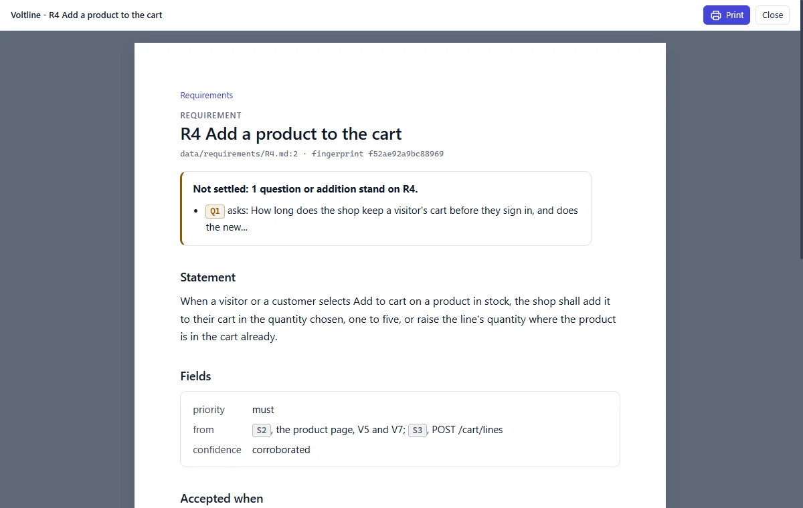

Sharing it
Not everyone will open the small website. There are three ways to share what's in it.
One page, on paper

Press the printer in the bar. The page opens alone on a white A4 sheet in a new tab. Check it, then press Print to send it to paper or save a PDF. Each sheet has a foot with the page's name and "Page 1 of 3". Long screens fill the sheet's width and run on to the next sheet, and a flow's diagram keeps to one sheet. On the prototype, you get the screen in the state you are looking at.
The whole specification, as one file
Press Export in the bar, or run python app/spec.py export. You get one HTML file that holds everything, for someone with no Python: every node, every prototype, ID cards on a right click, and a flow diagram for each flow. It's also kept in export/.
Two limits apply to the export:
- Its flow diagrams need an internet connection when the file is opened. Without one, a flow shows its diagram's text, and its steps say the same.
- Printing the whole export leaves out the prototype screens. To print a screen, use the printer on its page.
The folder itself
A specification carries its own copy of the application, so you can zip the folder and send it. Anyone with Python 3.14 can run index.cmd on Windows, or sh index.sh on macOS
and Linux. It needs nothing else, and it doesn't depend on the skill.
To give an existing specification a newer application, see SETUP.md.